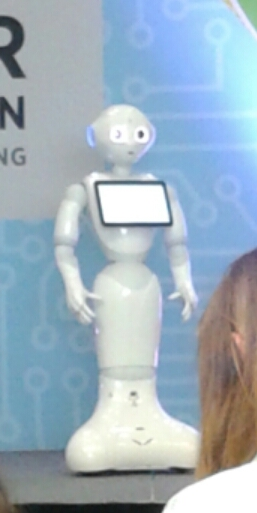

I went to GHC because I want to be a mentor, teacher, and role model for other women wanting to pursue a STEM degree. I was hoping that there would be sessions there that would help me learn new strategies to attract more women to computer science, provide support to keep them in the field. I was a little disappointed with the sessions I went to that were specifically about these issues, since they did not provide much new information to me. In this reflection, I will mostly focus on the sessions and events that I found interesting or helpful, which I found mostly through serendipity.
The opening keynote was an overwhelming and slightly frightening experience for me. To hold 15,000 attendees, it needed to be held in a basketball stadium, where security was very tight. When we got past the metal detectors and bag inspection station, we headed towards the seating area, which was curtained off so that all I could see was occasional bright flashes of light, and all I could hear was the pounding pop music. They were apparently trying to have a dance party at 9:00 in the morning. (If you are an introvert or a highly sensitive person, I would recommend wearing earplugs. I did that during the Friday ending keynote and could still hear everything just fine.) Despite the noise and fairly ridiculous flamboyance, I did enjoy the speakers, especially Latanya Sweeney's talk on the privacy implications of the technocracy we live in, and Ginni Rometty's stories about her mother's persistence in the face of adversity.
After the insanity of the opening keynote, I found refuge in Susan Cain's talk "Quiet: How to Harness the Strengths of Introverts to Transform How We Work, Lead and Innovate".The challenges introverts face in the tech industry seem to be similar to those of women, and if you're an introverted woman, the problems are compounded. I was pleased with this talk, because it gave me some useful advice for making myself understood to extroverts (for example, I could probably work on showing more emotional reactions when I'm around people I don't know), as well as showing the extroverts in the room that introverts have their own strengths as well. The Q&A was my favourite part of this session, because introverts were able to ask questions about what to do in particular situations. For instance, one student pointed out that our education system is moving more and more toward supporting extroverted ways of learning, with group activities and participation points being a large part of grades. In her experience, a few extroverts tend to dominate the class discussions, so she finds it difficult to have her voice heard, and she worries about losing those participation points. Cain's advice was to speak up early in classes or meetings, because those who do, introvert or extrovert, tend to be the anchors of the conversation. Another question concerned socializing with colleagues. This woman worried about refusing invitations to grab coffee, etc., because she didn't want to offend people or separate herself from her workplace culture. Cain said that as a society, we need to work on normalizing introversion, so that in situations like this an introvert can get the time to herself that she needs without feeling like she's forfeiting opportunities.
Another highlight of the conference was the "Introduction to Programming Humanoid Robots with Emotional Intelligence", a workshop where we learned how to program Aldebaran's robot Pepper. The presenters had brought two of these robots to show off. I had always thought the videos of these robots were a bit creepy, but in person, they were just completely adorable! Pepper is designed to socially interact with humans, and is very good at recognizing and responding to human emotional displays, as well as displaying emotion itself. Everyone in the audience was delighted by Pepper reacting with child-like excitement to a pat on the head. It was just too cute!
The most thought-provoking panel was on "Moral machines: How philosophy can help AI decide right from wrong". The discussion opened with concerns about bias in statistics and data sets. I hadn't thought much about this before, but Omoju Miller explained how dangerous this can be in cases like predictive policing. If a dataset is skewed and shows that more Black people commit crimes, then predictive policing will have police randomly stopping more Black people, which could then add more data to the existing skew. How do we change these datasets to make them more fair? Who decides what ideals datasets should reflect? These issues carry over into the next problem they talked about: having AIs making decisions instead of people. Which ethical framework do we build into these programs? How can we be transparent about how these decisions are being made while also including enough complexity in the algorithm to make good decisions? The discussion wrapped up be talking about artificial super-intelligences (which delighted this Person of Interest fan) and how they could be given a sense of empathy, which is required if we want people to be able to have second chances.
When I got home, I was asked if I found it inspiring to see so many other women in tech. I answered yes, I definitely found it really comforting to know that there are so many of us in the world. However, everyone I talked to there had a very similar story: we are all in the minority in our labs and workplaces, either alone or with just one or two other women. There may be a lot of us when we gather together, but it is frustrating to know that there are still many problems in the tech world that need to be addressed. Hopefully conferences like this one will help increase the number of women and other minorities in tech through providing a supportive network of people who are going through the same challenges.